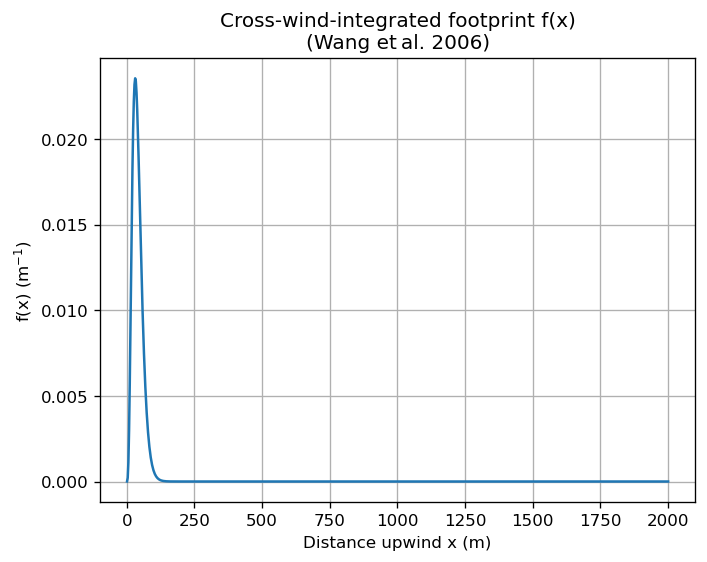

Wang et al. (2006) Flux Footprint Demo
This Jupyter notebook demonstrates how to
Compute the cross‑wind‑integrated flux footprint (f(x)) using the semi‑empirical parameterisation of Wang et al. (2006).
Reconstruct a 2‑D Gaussian footprint (f(x,y)) assuming lateral dispersion grows linearly with distance.
Visualise both the 1‑D and 2‑D results.
LiteratureWang W., Davis K.J., Ricciuto D.M., Butler M.P. (2006).An Approximate Footprint Model for Flux Measurements in the Convective Boundary Layer.J. Atmos. Oceanic Tech. 23(10), 1384–1394.
[1]:
import numpy as np
import matplotlib.pyplot as plt
import sys
import os
#sys.path.insert(0, os.path.abspath(os.path.join(os.path.dirname(__file__), "../src")))
sys.path.append("../../src")
# Import the local module (ensure it's on PYTHONPATH or in the same folder)
from fluxfootprints.wang_footprint import wang2006_fy, reconstruct_gaussian_2d
# Inline plotting
%matplotlib inline
plt.rcParams['figure.dpi'] = 120
c:\Users\paulinkenbrandt\Documents\GitHub\footprints\docs\notebooks\../../src\fluxfootprints\improved_ffp.py:1610: SyntaxWarning: invalid escape sequence '\s'
"""
[3]:
# --- Example micrometeorological inputs -------------------------------
z_m = 20.0 # measurement height (m)
z0 = 0.1 # roughness length (m)
L = -50.0 # Obukhov length (m) (negative = convective)
h = 1000.0 # mixing height (m)
# x grid (m)
x = np.linspace(1.0, 2000.0, 800)
# Compute cross‑wind‑integrated footprint using Wang et al. 2006
f_x = wang2006_fy(x, z_m, h, L)
# Normalise to ensure integral ≈ 1
dx = x[1] - x[0]
f_x /= np.trapezoid(f_x, x)
print('∫ f(x) dx =', np.trapezoid(f_x, x))
∫ f(x) dx = 1.0
[4]:
fig, ax = plt.subplots()
ax.plot(x, f_x, color='tab:blue')
ax.set_xlabel('Distance upwind x (m)')
ax.set_ylabel('f(x) (m$^{-1}$)')
ax.set_title('Cross‑wind‑integrated footprint f(x)\n(Wang et al. 2006)')
ax.grid(True)
